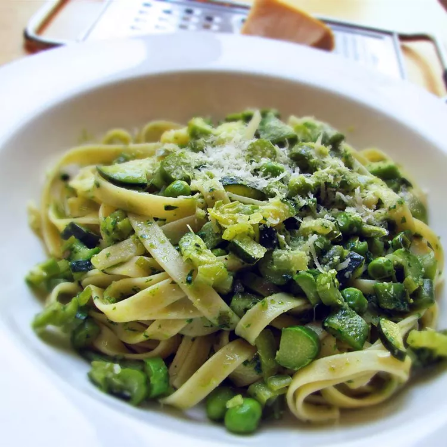

Pastaa Primavera

Pasta primavera is quite a straightforward recipe; spaghetti or fettuccine tossed with an array of fresh spring
vegetables. When done right, this is one of the year's great seasonal recipes. This looks, smells, and tastes
like a cool, sunny spring day.
Ingredients
- 1 bunch of fresh basil
- 3 cups of chicken broth, divided
- 1/2 cup olive oil
- 2 cloves garlic
- 1 pound fetuccine pasta
- 1 large leek, white and light green parts only, chopped
- 1 bunch green onions, chopped
- 2 jalapeno peppers, seeded and diced
- 2 pinches salt
- 2 zucchinis, diced
- 1 cup chopped sugar snap peas
- 1/2 cup shelled English peas
- 1 bunch asparagus, stalks diced, tips left whole
- 1/2 cup grated Parmesan cheese, or as needed
Steps
- Step 1: Fill a large pot with lightly salted water and bring to a rolling boil. Hold basil bunch by the
stems and dip basil leaves in boiling water until bright green, about 2 seconds. Immediately immerse basil
in ice water for several minutes until cold to stop the cooking process. Once the basil is cold, drain well.
Remove basil leaves from stems and discard stems.
- Step 2: Blend basil leaves, 1 cup chicken broth, 1/2 cup olive oil, and garlic together in a blender until
smooth.
- Step 3: Stir fettuccine into the same pot of boiling water, bring back to a boil, and cook pasta over medium
heat until cooked through but still firm to the bite, about 8 minutes. Drain.
- Step 4: Heat remaining 2 tablespoons olive oil in a large saucepan over medium heat. Cook and stir leek and
green onion in hot oil until softened, about 5 minutes. Add jalapeno and salt; cook and stir until jalapeno
is soft, about 5 minutes.
- Step 5: Increase heat to medium-high. Stir 2 cups chicken broth, zucchini, sugar snap peas, and English peas
into jalapeno mixture; bring to a simmer and cook for 5 minutes. Add asparagus and continue cooking until
asparagus is soft, about 3 minutes more.
- Step 6: Pour 1/4 cup basil-garlic mixture into zucchini mixture and cook and stir until heated through,
about 1 minute. Remove from heat.
- Step 7: Place pasta in a large bowl; pour zucchini mixture over pasta and pour remaining basil-garlic
mixture
over the zucchini mixture. Spread Parmesan cheese over the top. Toss mixture briefly to combine and tightly
wrap bowl with aluminum foil. Let stand until pasta and vegetables soak up most of the juices and oil, about
5 minutes. Toss again.